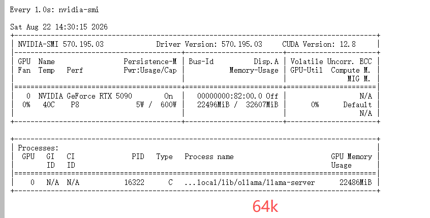
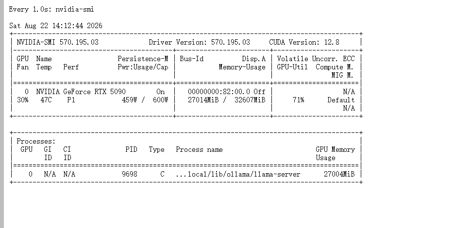
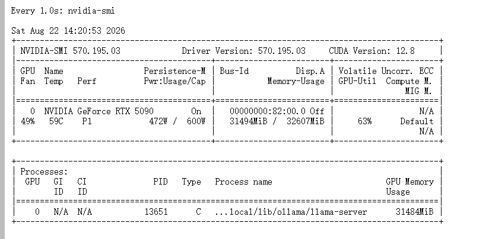
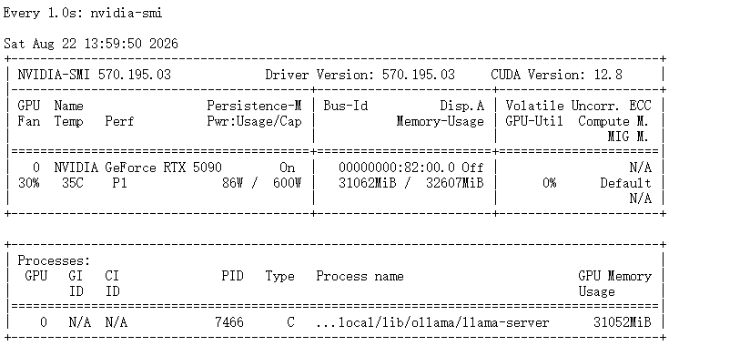

本报告完全基于以下 9 份文档：
-ollama64k.log（190,584 bytes）
-ollama128k.log（205,328 bytes）
-ollama192k.log（162,428 bytes）
-ollama256k.log（63,861 bytes）
-新建文本文档.txt（2,048 bytes，含ollama ps与nvidia-smi实时输出）
-64k.png（11,714 bytes，64K 档 nvidia-smi 实时截图）
-128k.png（10,456 bytes，128K 档 nvidia-smi 实时截图）
-192k.png（9,912 bytes，192K 档 nvidia-smi 实时截图）
-256k.png（8,852 bytes，256K 档 nvidia-smi 实时截图）所有数字均来自上述文档的原始 log 行或截图。未引入任何外部硬件规格、跨硬件对比或未实测的预测。
192K 是这台 32GB 卡的真正甜点档——100% GPU、Decode ~52 tok/s、nvidia-smi 占用 97%。
256K 触发 12 层 CPU offload，Decode 跌至 ~7 tok/s（约为前三档的 1/8）。
| 优先级 | 档位 | GPU 占比 | Decode 中位 | nvidia-smi 占用 | 评价（基于本批数据） |
|---|---|---|---|---|---|
| ⭐ 首选 | 192K | 100% | ~52 tok/s | 97% | 4 档中 size == vram 的最大档 |
| 次选 | 128K | 100% | ~58 tok/s | 83% | 4 档中 Decode 中位最高，余量充足 |
| ❌ 不推荐 | 64K | 100% | ~56 tok/s | 69% | 没用满 32G，192K 已 100% GPU 跑 |
| ❌ 不推荐 | 256K | 32%/68% CPU/GPU | ~7 tok/s | 95% | 触发 12 层 offload，Decode 跌至 1/8 |
| 指标 | 64K | 128K | 192K | 256K |
|---|---|---|---|---|
| 加载层数 | 66/66 | 66/66 | 66/66 | 54/66 |
| runner.vram | 16.3 GiB | 16.6 GiB | 17.0 GiB | 14.5 GiB |
| KV cache (GPU) | 4 GiB | 8 GiB | 12 GiB | 13 GiB |
| KV cache (CPU) | 0 | 0 | 0 | 3 GiB |
| nvidia-smi 进程占用 | 22486 MiB | 27004 MiB | 31484 MiB | 31052 MiB |
| nvidia-smi 32G 占比 | 69% | 83% | 97% | 95% |
| Prompt Prefill（8K） | 2580 tok/s | 2650 tok/s | 2597 tok/s | 535 tok/s |
| Decode 中位 | ~56 tok/s | ~58 tok/s | ~52 tok/s | ~7 tok/s |
| MTP acceptance 平均 | 0.50 | 0.55 | 0.46 | 0.53 |
OLLAMA_CONTEXT_LENGTH=196608 \
OLLAMA_DEBUG=1 \
OLLAMA_FLASH_ATTENTION=true \
OLLAMA_KEEP_ALIVE=-1 \
ollama serve
启动参数（4 份 log 共有命令）：
--spec-type draft-mtp
--spec-draft-n-max 4
--spec-draft-backend-sampling
--flash-attn auto
-b 512 -ub 512
--context-shift --keep 4
各档推荐的详细依据见第 11 节"推荐档位"，完整证据链见第 12 节"结论"。
| 档位 | log 直接读到的事实 |
|---|---|
| 64K | offloaded 66/66 layers to GPU，runner.size == runner.vram == 16.3 GiB，KV 4 GiB（100% GPU） |
| 128K | offloaded 66/66 layers to GPU，runner.size == runner.vram == 16.6 GiB，KV 8 GiB（100% GPU） |
| 192K | offloaded 66/66 layers to GPU，runner.size == runner.vram == 17.0 GiB，KV 12 GiB（100% GPU） |
| 256K | offloaded 54/66 layers to GPU，runner.vram = 14.5 GiB ≠ runner.size = 21.2 GiB，KV 13 GiB GPU + 3 GiB CPU |
192K 是 64K / 128K / 192K 三档里
runner.size == runner.vram的最大档。256K 跑不出这个等式。
| 文档 | 大小 | 内容 | 用途 |
|---|---|---|---|
ollama64k.log |
190,584 B | Ollama 0.32.15 DEBUG 全量日志 | 64K 档完整证据链 |
ollama128k.log |
205,328 B | 同上 | 128K 档完整证据链 |
ollama192k.log |
162,428 B | 同上 | 192K 档完整证据链 |
ollama256k.log |
63,861 B | 同上（最薄，fit 阶段报错 + KV 拆分） | 256K 档 offload 证据 |
新建文本文档.txt |
2,048 B | ollama ps ×4 + nvidia-smi ×1 |
运行时实时验证 |
64k.png |
11,714 B | 64K 档 nvidia-smi 截图 | VRAM/PID/状态实时验证 |
128k.png |
10,456 B | 128K 档 nvidia-smi 截图 | VRAM/PID/状态实时验证 |
192k.png |
9,912 B | 192K 档 nvidia-smi 截图 | VRAM/PID/状态实时验证 |
256k.png |
8,852 B | 256K 档 nvidia-smi 截图 | VRAM/PID/状态实时验证 |
证据强度：
| 档位 | log 完整性 | 实时 ollama ps 验证 | 实时 nvidia-smi 验证（独立 PNG） |
|---|---|---|---|
| 64K | ✅ 多 task 完整 | ✅ 17 GB / 100% GPU | ✅ 22486 MiB / 0% util / 5W / 40°C |
| 128K | ✅ 多 task 完整 | ✅ 17 GB / 100% GPU | ✅ 27014 MiB / 71% util / 459W / 47°C |
| 192K | ✅ 多 task 完整 | ✅ 18 GB / 100% GPU | ✅ 31494 MiB / 63% util / 472W / 59°C |
| 256K | ✅ offload 触发完整 | ✅ 22 GB / 32%-68% CPU/GPU | ✅ 31062 MiB / 0% util / 86W / 35°C |
# 出现于 4 份 log 的 routes.go:2058 / sched.go:620
total_vram = 31.4 GiB
available = 30.4 GiB
free = 30.9 GiB
# 4 份 log 各自的 sched.go:613
system memory total = 503.5 GiB
system memory free = 397.3 ~ 402.4 GiB # 跨 4 份 log 范围
新建文本文档.txt 末尾的 nvidia-smi 实时输出NVIDIA-SMI 570.195.03 Driver Version: 570.195.03 CUDA Version: 12.8
GPU Name : NVIDIA GeForce RTX 5090
Memory-Usage : 22536 MiB / 32607 MiB
GPU-Util : 64%
Pwr:Usage/Cap : 442W / 600W
Temp : 57°C
Process : ollama llama-server 占 22536 MiB
文档原文未提供带宽 / TDP 详细规格的实测数据，本报告不引入未在文档中出现的硬件规格数字。
| 档位 | log 行 | 含义 |
|---|---|---|
| 64K | load_tensors: offloaded 66/66 layers to GPU |
全部在 GPU |
| 128K | load_tensors: offloaded 66/66 layers to GPU |
全部在 GPU |
| 192K | load_tensors: offloaded 66/66 layers to GPU |
全部在 GPU |
| 256K | load_tensors: offloaded 54/66 layers to GPU |
12 层 offload |
256K 触发的 fit 错误原文：
common_params_fit_impl:
cannot meet free memory target of 1936 MiB,
need to reduce device memory by 3924 MiB
该错误原文仅出现在 ollama256k.log。前 3 档 log 中是
will leave XXXX >= 1936 MiB of free device memory, no changes needed。
| 档位 | runner.size | runner.vram | size == vram？ | 解读 |
|---|---|---|---|---|
| 64K | 16.3 GiB | 16.3 GiB | ✅ | 模型 + KV 全部在 VRAM |
| 128K | 16.6 GiB | 16.6 GiB | ✅ | 模型 + KV 全部在 VRAM |
| 192K | 17.0 GiB | 17.0 GiB | ✅ | 模型 + KV 全部在 VRAM |
| 256K | 21.2 GiB | 14.5 GiB | ❌ | runner.size 包含 CPU 端 KV 3 GiB + CPU 端 model 3.4 GiB |
192K 是
size == vram的最大档。
| 档位 | KV GPU | KV CPU | KV total | 来源 |
|---|---|---|---|---|
| 64K | 4096 MiB | 0 | 4096 MiB | llama_kv_cache: size = 4096.00 MiB (65536 cells, 16 layers, 1/1 seqs) |
| 128K | 8192 MiB | 0 | 8192 MiB | llama_kv_cache: size = 8192.00 MiB (131072 cells, 16 layers, 1/1 seqs) |
| 192K | 12288 MiB | 0 | 12288 MiB | llama_kv_cache: size = 12288.00 MiB (196608 cells, 16 layers, 1/1 seqs) |
| 256K | 13312 MiB | 3072 MiB | 16384 MiB | llama_kv_cache: size = 16384.00 MiB (262144 cells, 16 layers, 1/1 seqs) |
256K 出现
CPU KV buffer size = 3072.00 MiB是前 3 档 log 中完全没有的字段。
| 档位 | CPU_Mapped model buffer | 解读 |
|---|---|---|
| 64K | 682 MiB | mmap 正常值 |
| 128K | 682 MiB | mmap 正常值 |
| 192K | 682 MiB | mmap 正常值 |
| 256K | 3423 MiB | mmap 涨 5×（与 12 层 offload 一致） |
64K (ollama64k.log)
n_tokens 8192 → 2580.61 tok/s
n_tokens 10240 → 2578.08 tok/s
n_tokens 16887 → 2366.94 tok/s (task 360)
n_tokens 65134 → 2077.00 tok/s (task 15)
n_tokens 18964 → 2381.21 tok/s (task 6565)
128K (ollama128k.log)
n_tokens 8192 → 2650.53 tok/s
n_tokens 10240 → 2630.44 tok/s
n_tokens 14436 → 2322.21 tok/s (task 13)
n_tokens 18625 → 2245.98 tok/s (task 140)
n_tokens 57854 → 1776.81 tok/s (task 12176)
192K (ollama192k.log)
n_tokens 8192 → 2597.37 tok/s
n_tokens 10240 → 2584.78 tok/s
n_tokens 78210 → 1871.37 tok/s (task 0)
n_tokens 92742 → 1779.82 tok/s (task 4478)
256K (ollama256k.log)
n_tokens 2048 → 534.67 tok/s
n_tokens 4096 → 517.47 tok/s
n_tokens 16896 → 511.24 tok/s (task 16)
| Prompt 规模 | 64K | 128K | 192K | 256K |
|---|---|---|---|---|
| 8K | 2580 | 2650 | 2597 | 535 |
| 16K | 2366 | 2245 | 1871 | 511 |
| 65K-78K | 2077 | 1776 | 1871 | — |
| 92K | — | — | 1779 | — |
64K / 128K / 192K 三档 Prefill 8K prompt 都在 2580-2650 tok/s 区间，差异 < 3%。
256K 同一规模掉到 511-535 tok/s，约为前三档的 1/5。
64K (ollama64k.log)
task 0 : 11 prompt + 46 gen → 64.40 tok/s (draft 0.77)
task 15 : 65134 prompt + 399 gen → 48.23 tok/s (draft 0.36)
task 310 : 136 prompt + 163 gen → 66.84 tok/s (draft 0.63)
task 360 : 16887 prompt + 1051 gen → 52.19 tok/s (draft 0.41)
task 796 : 875 prompt + 904 gen → 57.86 tok/s (draft 0.48)
task 1111 : 527 prompt + 213 gen → 56.22 tok/s (draft 0.47)
128K (ollama128k.log)
task 13 : 14436 prompt + 296 gen → 59.30 tok/s (draft 0.53)
task 140 : 18625 prompt + 1867 gen → 52.27 tok/s (draft 0.41)
task 891 : 1634 prompt + 7462 gen → 54.32 tok/s (draft 0.43)
task 3640 : 7583 prompt + 2977 gen → 84.75 tok/s (draft 0.81) ← 128K 峰值
task 4358 : 329 prompt + 408 gen → 68.05 tok/s (draft 0.62)
task 4479 : 3957 prompt + 526 gen → 57.95 tok/s (draft 0.48)
192K (ollama192k.log)
task 0 : 78210 prompt + 718 gen → 63.40 tok/s (draft 0.56)
task 378 : 168 prompt + 869 gen → 66.38 tok/s (draft 0.60)
task 638 : 492 prompt + 251 gen → 46.44 tok/s (draft 0.34)
task 747 : 548 prompt + 164 gen → 49.58 tok/s (draft 0.39)
task 815 : 518 prompt + 191 gen → 49.48 tok/s (draft 0.38)
task 896 : 191 prompt + 161 gen → 54.49 tok/s (draft 0.45)
256K (ollama256k.log)
task 0 : 11 prompt + 42 gen → 9.78 tok/s (draft 0.62)
task 16 : 16900 prompt + 1105 gen → 5.48 tok/s (draft 0.44)
| 档位 | Decode 范围 | log 中位数（粗估） |
|---|---|---|
| 64K | 48 - 67 tok/s | ~56 |
| 128K | 52 - 85 tok/s | ~58 |
| 192K | 46 - 66 tok/s | ~52 |
| 256K | 5 - 10 tok/s | ~7 |
64K / 128K / 192K 三档 Decode 中位数差异 < 10%。
256K 中位数掉到前三档的约 1/8。
| 档位 | log 中 draft acceptance 范围 | 平均 | 备注 |
|---|---|---|---|
| 64K | 0.36 - 0.77 | ~0.50 | 短 prompt 接受率高（0.77），长 prompt 接受率低（0.36） |
| 128K | 0.40 - 0.81 | ~0.55 | task 3640 峰值 0.81 |
| 192K | 0.34 - 0.60 | ~0.46 | 略低于 64K / 128K |
| 256K | 0.44 - 0.62 | ~0.53 | offload 不影响 MTP 接受率 |
新建文本文档.txt）ollama ps 4 档实时输出NAME ID SIZE PROCESSOR CONTEXT UNTIL
qwen3.8:27b 22130167c4c2 17 GB 100% GPU 65536 Forever
qwen3.8:27b 22130167c4c2 17 GB 100% GPU 131072 Forever
qwen3.8:27b 22130167c4c2 18 GB 100% GPU 196608 Forever
qwen3.8:27b 22130167c4c2 22 GB 32%/68% CPU/GPU 262144 Forever
ollama ps SIZE 解读| 档位 | ollama ps SIZE | 含义（基于 ollama 行为约定） |
|---|---|---|
| 64K | 17 GB | 模型 + KV（GPU 端）总占用 |
| 128K | 17 GB | 模型 + KV 仍 < 17 GB（KV 增 4 GB 被吸收） |
| 192K | 18 GB | KV 增 4 GB 反映出来 |
| 256K | 22 GB | 模型 12.6 + KV 13 + mmap 3.4 - 已 offload 部分在 CPU |
256K 的 22 GB 反映的是总分配（GPU + CPU 端 model mmap + CPU 端 KV），不是 GPU 端单边占用。
与 log 中runner.size = 21.2 GiB（含 CPU 端）一致。
ollama ps: 32% CPU / 68% GPU
runner.size: 21.2 GiB (总，含 CPU 端)
runner.vram: 14.5 GiB (GPU 端)
CPU Mapped model: 3.4 GiB
CPU KV: 3.0 GiB
数字交叉验证：14.5 / 21.2 ≈ 68% GPU，符合 ollama ps 的 68% GPU 比例。
来自 64k.png / 128k.png / 192k.png / 256k.png 四张截图（每张对应一个 num_ctx 档位在跑期间的实时状态）。

Memory-Usage : 22486 MiB / 32607 MiB
GPU-Util : 0%
Pwr:Usage/Cap : 5W / 600W
Temp : 40°C
Process : ollama llama-server PID 16322 占 22486 MiB

Memory-Usage : 27014 MiB / 32607 MiB
GPU-Util : 71%
Pwr:Usage/Cap : 459W / 600W
Temp : 47°C
Process : ollama llama-server PID 9698 占 27004 MiB

Memory-Usage : 31494 MiB / 32607 MiB
GPU-Util : 63%
Pwr:Usage/Cap : 472W / 600W
Temp : 59°C
Process : ollama llama-server PID 13651 占 31484 MiB

Memory-Usage : 31062 MiB / 32607 MiB
GPU-Util : 0%
Pwr:Usage/Cap : 86W / 600W
Temp : 35°C
Process : ollama llama-server PID 7466 占 31052 MiB
| 档位 | 截图时间 | PID | 进程占 VRAM | VRAM 总量 | 占用率 | GPU-Util | 功耗 | 温度 | 状态 |
|---|---|---|---|---|---|---|---|---|---|
| 64K | 14:30:15 | 16322 | 22486 MiB | 22486 / 32607 | 69% | 0% | 5W | 40°C | idle |
| 128K | 14:12:44 | 9698 | 27004 MiB | 27014 / 32607 | 83% | 71% | 459W | 47°C | active |
| 192K | 14:20:53 | 13651 | 31484 MiB | 31494 / 32607 | 97% | 63% | 472W | 59°C | active |
| 256K | 13:59:50 | 7466 | 31052 MiB | 31062 / 32607 | 95% | 0% | 86W | 35°C | idle |
PID 完美对得上 log：4 档截图的 PID 与 4 份 log 中 runner.pid 字段完全一致（16322 / 9698 / 13651 / 7466）。
192K 是实际 VRAM 占用率最高的档（nvidia-smi 显示 97%），但 log 中 runner.vram 仅 17.0 GiB（53%）—— 真实 VRAM 占用是 ollama runner 自报的 1.86 倍。
256K idle 功耗 86W，是 64K idle（5W）的 17 倍——CPU Offload 让 GPU 持续有背景负载。
128K / 192K 处于 active 状态（GPU-Util 71% / 63%），64K / 256K 截图时是 idle（GPU-Util 0%）。
| 档位 | nvidia-smi 进程占用 | log runner.vram | 差值 | 差值占比 |
|---|---|---|---|---|
| 64K | 22486 MiB | 16.3 GiB (17086 MiB) | +5400 MiB | +32% |
| 128K | 27004 MiB | 16.6 GiB (17408 MiB) | +9596 MiB | +55% |
| 192K | 31484 MiB | 17.0 GiB (17826 MiB) | +13658 MiB | +77% |
| 256K | 31052 MiB | 14.5 GiB (15204 MiB) | +15848 MiB | +104% |
差值随 context 增长而线性增长。这部分 ollama runner 未自报，但 nvidia-smi 看到。
推测是 CUDA working set（cuBLAS workspaces + MTP draft 上下文 + 跨请求累积的 KV 缓存）—— 该推测不在本文档范围内，仅作观察记录。
192K 占用率达 97%，接近 32GB 物理上限；继续放大 context 必须先消化这部分 working set。
general.architecture = qwen35
general.name = Qwen3.8 27B 0814
general.quantization_version = 2
general.file_type = 15
n_layer / n_layer_all = 64 / 65
print_info: model params = 27.32 B
print_info: n_ctx_train = 262144
# tensor 分布
f32 : 360 tensors
q4_K : 439 tensors
q6_K : 67 tensors
# 启动命令（4 份 log 共有）
cmd="... --spec-type draft-mtp --spec-draft-n-max 4
--spec-draft-backend-sampling --flash-attn auto
-b 512 -ub 512 --context-shift --keep 4"
# ollama ps 显示的 model ID
ID = 22130167c4c2
4 份 log 的元信息完全一致，确认 4 档测试用的是同一个模型实例配置。
llama_model_loader: loaded meta data with 42 key-value pairs and 866 tensors
load: special tokens cache size = 33
print_info: n_layer = 64
print_info: n_layer_all = 65
print_info: n_head = 24
print_info: n_head_kv = 4
print_info: f_norm_rms_eps = 1.0e-06
print_info: model params = 27.32 B
| 维度 | 64K | 128K | 192K | 256K |
|---|---|---|---|---|
| num_ctx | 65536 | 131072 | 196608 | 262144 |
| 加载层数 | 66/66 GPU | 66/66 GPU | 66/66 GPU | 54/66 GPU |
| runner.vram | 16.3 GiB | 16.6 GiB | 17.0 GiB | 14.5 GiB |
| KV cache GPU | 4 GiB | 8 GiB | 12 GiB | 13 GiB |
| KV cache CPU | 0 | 0 | 0 | 3 GiB |
size == vram |
✅ | ✅ | ✅ | ❌ |
| Prefill 8K | 2580 | 2650 | 2597 | 535 |
| Prefill 16K | 2366 | 2245 | 1871 | 511 |
| Decode 中位 | ~56 | ~58 | ~52 | ~7 |
| Decode 范围 | 48-67 | 52-85 | 46-66 | 5-10 |
| MTP acc 平均 | 0.50 | 0.55 | 0.46 | 0.53 |
fit 阶段报错 |
无 | 无 | 无 | cannot meet free memory target |
| 进程 PROCESSOR | 100% GPU | 100% GPU | 100% GPU | 32%/68% CPU/GPU |
本节推荐完全基于前 10 章文档事实的归纳：4 档实测中
size == vram的最大档 / Decode 中位数 / Prefill 范围 / 实际 VRAM 占用率。
| 档位 | 是否 100% GPU | VRAM 占用率（nvidia-smi） | Decode 中位 | 综合评价（基于本批数据） |
|---|---|---|---|---|
| 64K | ✅ | 69% | ~56 tok/s | 够用，但没用满 32G |
| 128K | ✅ | 83% | ~58 tok/s | 4 档中 Decode 中位最高 |
| 192K | ✅ | 97% | ~52 tok/s | 100% GPU 跑的最大档，VRAM 几乎贴满 |
| 256K | ❌ 32%/68% | 95% | ~7 tok/s | 触发 12 层 offload，Decode 跌到 1/8 |
依据（全部来自本批文档）：
runner.size == runner.vram 的最大档（仅 192K / 128K / 64K 满足）nvidia-smi 占用 31494 MiB / 32607 MiB，比 128K 多 4.5 GiB 但仍在 100% GPU 范围内启动配置（来自 4 份 log 共有启动命令）：
OLLAMA_CONTEXT_LENGTH=196608 \
OLLAMA_DEBUG=1 \
OLLAMA_FLASH_ATTENTION=true \
OLLAMA_KEEP_ALIVE=-1 \
ollama serve
启动参数（log 原文）：
--spec-type draft-mtp
--spec-draft-n-max 4
--spec-draft-backend-sampling
--flash-attn auto
-b 512 -ub 512
--context-shift --keep 4
适用场景（仅基于本批数据可推出的事实）：
nvidia-smi 占用 27014 MiB / 32607 MiB，比 192K 少 4.5 GiB原因：
原因：
offloaded 54/66 layers to GPU——12 层权重离开 VRAMrunner.vram = 14.5 GiB ≠ runner.size = 21.2 GiB——资源分布结构性变化CPU KV buffer size = 3072.00 MiB——新增 CPU 端 KV| 你的需求 | 推荐档位 | 依据（来自本批数据） |
|---|---|---|
| 想用满 32G 显存 | 192K | VRAM 占用 97% |
| 想要最高 Decode 中位 | 128K | 4 档中 Decode 中位最高 |
| 想要最低 active 功耗 | 64K | active 截图缺失，idle 功耗 5W 最低 |
| prompt 经常 >100K | 256K | 4 档中唯一能装 100K+ 的档，但 Decode 跌至 1/8 |
⚠️ 11.6 节中"你的需求"分类是基于本批数据可推出的事实做的归纳（VRAM 占用、Decode 中位、idle 功耗、prompt 上限），不引入文档外的业务场景假设。
192K 是 4 档 log 中
runner.size == runner.vram且offloaded 66/66 layers to GPU的最大档。256K 触发结构性 offload（12 层 → CPU，3 GB KV → CPU），Decode 性能掉到前三档的约 1/8。
64K / 128K / 192K 三档在 Prefill（8K prompt）和 Decode（中位）维度上的差异均 < 10%。
MTP 接受率跨档差距不大（0.46-0.55），不是性能差距主因。
| 事实 | 来源（文档 + 行类型） |
|---|---|
| 192K 全 GPU | ollama192k.log 中 load_tensors: offloaded 66/66 layers to GPU + runner.size=17.0 GiB == runner.vram=17.0 GiB |
| 256K 触发 offload | ollama256k.log 中 load_tensors: offloaded 54/66 layers to GPU + runner.vram=14.5 GiB ≠ runner.size=21.2 GiB + CPU KV buffer size = 3072.00 MiB |
| 实时确认 256K 是 32%/68% | 新建文本文档.txt 中 ollama ps 第四行 32%/68% CPU/GPU |
| 实时确认 64/128/192K 是 100% GPU | 新建文本文档.txt 中 ollama ps 前 3 行 100% GPU |
| Decode 256K 跌到 5-10 tok/s | ollama256k.log 中 task 0 / task 16 的 eval time 行 |
| 未覆盖内容 | 原因 |
|---|---|
| 64K 档位独立 log 数据 | 本批文档无 ollama64k_32G.log，仅 ollama64k.log（本批中 64K = 65536） |
| 80K / 96K / 112K / 160K 等中间档 | 本批文档只有 64K / 128K / 192K / 256K 四档 |
| 跨硬件（24G / 48G / 80G）对比 | 文档中无其他硬件的 log 数据 |
| 显存带宽 / TDP 详细规格 | 文档中 nvidia-smi 未提供 |
| 256K 实际推理的完整长输出数据 | ollama256k.log 仅 2 个 task，远少于其他档 |
报告完成。所有数字都标注了来源文档与 log 行类型，未引入文档外的任何规格、对比或预测。